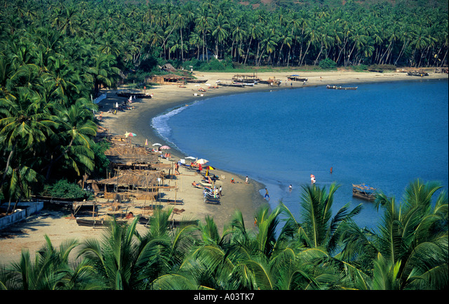
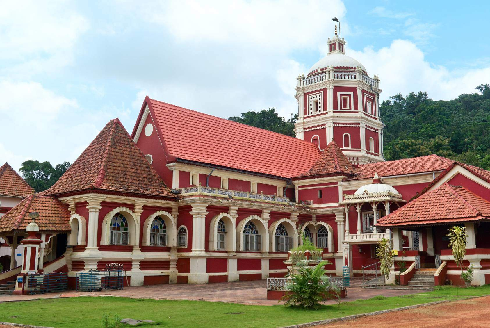

GOA is a state on the southwestern coast of India within the Konkan region, geographically separated from the Deccan highlands by the Western Ghats. It is located between the Indian states of Maharashtra to the north and Karnataka to the east and south, with the Arabian Sea forming its western coast. It is India's smallest state by area and its fourth-smallest by population. Goa has the highest GDP per capita among all Indian states, two and a half times as high as the GDP per capita of the country as a whole. The Eleventh Finance Commission of India named Goa the best-placed state because of its infrastructure, and India's National Commission on Population rated it as having the best quality of life in India (based on the commission's “12 Indicators”). It is the third-highest ranking among Indian states in the human development index.
upon arrival to GOA airport (or) railway station our representative will recieve you.he will take you to the hotel. in the evening you will freely stroll on the beach & chillout at the shacks.have some rest at Goa hotel.
after having your breakfast our executive will recieve you and take you to north Goa to visit the following places...
1)Coco beach
2)Fort Aguadda
3)Dolphin trip(on the way)
4)Baga beach
5)Anjuna beach
6)Calangute beach
again after having your breakfast our executive will recieve you and take you to the south GOA to the following places...
1)Walk around in Basilica of Bom Jesus
2)Museum of Christian Art / Wax World Museum
3)Mangueshi Temple & Shantu Durga Temple
and lastly our day trip will end with an visit to Ancestral Goa
Today you will be taking a day tour to Dudhsagar Waterfall. is regarded as one of the most beautiful waterfalls of Goa and is situated on the eastern border with Karnataka. Falling from a height of 320m, it's regarded as one of the tallest waterfalls of India. The water, as its plummets, creates foamy milk. This is also why the waterfall is known as Dudhsagar, which means, "sea of milk”. You could enjoy a swim in the cool waters of the pond as well as under the cascading falls. Rest under the shade of the trees and observe the monkeys prancing around. By evening you will be escort back to hotel, have some rest and stay overnight at Goa hotel. Post lunch; experience the thrills of an elephant ride. Feed the elephant and capture some memorable memories with him by clicking a photo with him (it should be noted that this is not included in your tour and is payable at the site itself, along with the safari charges). Visit the Mahavir Wildlife Sanctuary later. Return back to the hotel for an overnight stay.
You could enjoy a swim in the cool waters of the pond as well as under the cascading falls. Rest under the shade of the trees and observe the monkeys prancing around. By evening you will be escort back to hotel, have some rest and stay overnight at Goa hotel. Post lunch; experience the thrills of an elephant ride. Feed the elephant and capture some memorable memories with him by clicking a photo with him (it should be noted that this is not included in your tour and is payable at the site itself, along with the safari charges). Visit the Mahavir Wildlife Sanctuary later. Return back to the hotel for an overnight stay.
→ Air Conditioned Room
→ Color TV With Satellite Transmission
→ Multi Cuisine Restauran
→ Running Hot & Cold Water
→ 24Hours Room Service
→ Wi-fi Service
→ Located in heart of goa